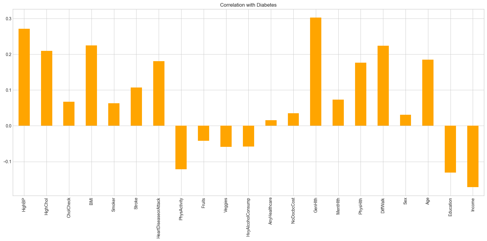

Tổng quan
Tiểu đường hiện là một trong những bệnh lý mạn tính phổ biến và nguy hiểm nhất trên toàn cầu. Theo nhiều nghiên cứu y tế, phần lớn bệnh nhân thường chỉ được phát hiện khi bệnh đã tiến triển hoặc xuất hiện biến chứng liên quan đến tim mạch, thần kinh và thận. Điều này khiến việc phát hiện sớm các nhóm có nguy cơ cao trở thành một bài toán đặc biệt quan trọng trong y học dự phòng hiện đại.
Trong thực tế, dữ liệu sức khỏe cộng đồng thường tồn tại nhiều vấn đề như: mất cân bằng dữ liệu nghiêm trọng, nhiễu thống kê, đặc trưng y tế chồng chéo giữa các nhóm bệnh, cũng như sự khác biệt lớn giữa các hành vi sinh hoạt và yếu tố nhân khẩu học. Điều này khiến việc xây dựng các hệ thống dự đoán bệnh bằng Machine Learning trở nên khó khăn hơn nhiều so với các bài toán classification thông thường.
Dự án này tập trung xây dựng một hệ thống phân tích nguy cơ tiểu đường dựa trên bộ dữ liệu Behavioral Risk Factor Surveillance System (BRFSS), kết hợp giữa Data Analysis, Statistical Testing và Machine Learning nhằm phát hiện sớm các cá nhân thuộc nhóm: Không tiểu đường, Tiền tiểu đường và Tiểu đường.
Thay vì chỉ tối ưu Accuracy tổng thể, nghiên cứu ưu tiên góc nhìn medical screening — nơi Recall cho các nhóm nguy cơ cao đóng vai trò quan trọng hơn nhằm giảm thiểu khả năng bỏ sót bệnh nhân.
Các công cụ và công nghệ
- Ngôn ngữ lập trình: Python
- Phân tích dữ liệu: Pandas, NumPy
- Trực quan hóa: Matplotlib, Seaborn
- Machine Learning: Scikit-learn, XGBoost
- Các mô hình sử dụng: Logistic Regression, Random Forest, XGBoost
- Kỹ thuật xử lý dữ liệu: Feature Scaling, Label Encoding, Class Balancing
- Đánh giá mô hình: Precision, Recall, F1-score, Confusion Matrix
- Môi trường thực thi: Jupyter Notebook, VS Code
Bộ dữ liệu BRFSS
Dự án sử dụng bộ dữ liệu Behavioral Risk Factor Surveillance System (BRFSS), một trong những hệ thống khảo sát sức khỏe cộng đồng lớn nhất tại Hoa Kỳ, được thu thập bởi Centers for Disease Control and Prevention (CDC).
Dataset bao gồm nhiều thông tin liên quan đến: tình trạng sức khỏe, thói quen sinh hoạt, hoạt động thể chất, tiền sử bệnh lý và yếu tố nhân khẩu học. Các đặc trưng này cho phép mô hình học được mối liên hệ giữa hành vi sống và nguy cơ phát triển bệnh tiểu đường.
Sau quá trình tiền xử lý, dữ liệu được chia thành ba nhóm mục tiêu chính:
- Không tiểu đường
- Tiền tiểu đường
- Tiểu đường
Một trong những thách thức lớn nhất của dataset là hiện tượng class imbalance nghiêm trọng, khi nhóm Tiền tiểu đường chiếm tỷ lệ rất thấp so với phần còn lại. Điều này khiến mô hình dễ thiên lệch về lớp majority và bỏ sót các trường hợp nguy cơ thực sự.
Phân tích dữ liệu khám phá (EDA)
Trước khi huấn luyện mô hình, dữ liệu được phân tích nhằm tìm hiểu đặc điểm phân bố, tương quan giữa các đặc trưng và các yếu tố có ảnh hưởng mạnh đến nguy cơ tiểu đường.
Quá trình EDA tập trung vào:
- Phân bố class và mức độ mất cân bằng dữ liệu
- Ảnh hưởng của BMI đến nguy cơ bệnh
- Tác động của tuổi tác và hoạt động thể chất
- Mối liên hệ giữa huyết áp cao, cholesterol và tiểu đường
- Phân tích correlation giữa các đặc trưng y tế
Kết quả cho thấy các đặc trưng như BMI cao, tuổi lớn, ít vận động, huyết áp cao và tiền sử bệnh tim có tương quan đáng kể với nguy cơ mắc tiểu đường.

Sự tương quan giữa các đặc trưng y tế và nguy cơ tiểu đường.
Phân tích thống kê và kiểm định giả thuyết
Ngoài các kỹ thuật trực quan hóa, dự án còn áp dụng các phương pháp kiểm định thống kê nhằm đánh giá mức độ ảnh hưởng của từng đặc trưng lên biến mục tiêu.
Các kiểm định được sử dụng bao gồm:
- Chi-Square Test cho các biến phân loại
- ANOVA và t-test cho các biến liên tục
- Correlation Analysis giữa các feature y tế
Kết quả kiểm định cho thấy nhiều biến có ý nghĩa thống kê mạnh đối với nguy cơ tiểu đường, đặc biệt là BMI, HighBP, HighChol và Age.
Pipeline Machine Learning
Sau bước phân tích dữ liệu, pipeline Machine Learning được xây dựng nhằm dự đoán nguy cơ tiểu đường dựa trên các đặc trưng sức khỏe và hành vi sống.
Quy trình huấn luyện bao gồm:
- Làm sạch và chuẩn hóa dữ liệu
- Feature scaling cho các biến liên tục
- Chia train/test set
- Xử lý mất cân bằng dữ liệu
- Huấn luyện và benchmark nhiều mô hình
- Đánh giá bằng confusion matrix và classification metrics
Nghiên cứu tập trung so sánh ba hướng tiếp cận chính:
- Logistic Regression: baseline model dễ diễn giải và phù hợp cho dữ liệu y tế.
- Random Forest: ensemble learning giúp giảm overfitting và cải thiện khả năng tổng quát hóa.
- XGBoost: boosting-based architecture mạnh trong xử lý dữ liệu structured và class imbalance.
Kết quả thực nghiệm
Các mô hình được đánh giá dựa trên nhiều metric khác nhau nhằm phản ánh đầy đủ hiệu năng trong bối cảnh dữ liệu y tế mất cân bằng.
Thay vì chỉ tối ưu Accuracy, nghiên cứu tập trung nhiều hơn vào Recall và F1-score cho các nhóm nguy cơ cao nhằm giảm khả năng bỏ sót bệnh nhân.
Phân tích chi tiết theo từng class cho thấy mỗi mô hình đều có những ưu điểm riêng trong việc xử lý các nhóm bệnh khác nhau.
- Logistic Regression: đạt Precision = 93.8%, Recall = 65.8% và F1-score = 77.3% trên nhóm Không tiểu đường. Đối với nhóm Tiền tiểu đường, mô hình đạt Precision = 3.2%, Recall = 24.7% và F1-score = 5.7%, trong khi ở nhóm Tiểu đường, mô hình đạt Precision = 35.4%, Recall = 61.2% cùng F1-score = 44.8%. Logistic Regression cho khả năng diễn giải tốt, tuy nhiên còn gặp hạn chế khi xử lý dữ liệu mất cân bằng mạnh.
- Random Forest: đạt Precision = 93.9%, Recall = 63.9% và F1-score = 76.0% trên nhóm Không tiểu đường. Với nhóm Tiền tiểu đường, mô hình đạt Precision = 3.1%, Recall = 21.7% và F1-score = 5.4%. Trong khi đó, Random Forest đạt Recall cao nhất ở nhóm Tiểu đường với Precision = 34.1%, Recall = 65.7% và F1-score = 44.9%.
- XGBoost: đạt Precision = 94.7%, Recall = 60.9% và F1-score = 74.1% trên nhóm Không tiểu đường. Đối với nhóm Tiền tiểu đường, mô hình đạt Precision = 3.1%, Recall cao nhất = 31.8%, mặc dù F1-score vẫn còn thấp ở mức 5.7% do ảnh hưởng của class imbalance nghiêm trọng. Ở nhóm Tiểu đường, XGBoost đạt Precision = 35.8%, Recall = 62.2% và F1-score = 45.4% — cao nhất trong ba mô hình, cho thấy XGBoost có xu hướng phát hiện tốt hơn các nhóm bệnh nguy cơ cao.
Tuy nhiên, khi so sánh tổng thể thông qua Accuracy, Macro Average và Weighted Average, sự khác biệt giữa ba mô hình không quá lớn. Điều này cho thấy mỗi mô hình đều có sự đánh đổi riêng giữa khả năng tổng quát hóa và hiệu năng trên từng nhóm bệnh.
| Mô hình | Accuracy | Macro Precision | Macro Recall | Macro F1-score |
|---|---|---|---|---|
| Logistic Regression | 0.64 | 0.44 | 0.50 | 0.43 |
| Random Forest | 0.63 | 0.44 | 0.50 | 0.42 |
| XGBoost | 0.60 | 0.45 | 0.51 | 0.42 |
Thách thức và giải pháp
- Mất cân bằng dữ liệu nghiêm trọng: Nhóm Tiền tiểu đường chiếm tỷ lệ rất thấp, khiến mô hình dễ bỏ sót các trường hợp nguy cơ. Các kỹ thuật balancing và tuning threshold được áp dụng nhằm cải thiện Recall.
- Đặc trưng y tế chồng chéo: Nhiều đặc trưng giữa các nhóm bệnh có phân bố gần giống nhau, làm tăng độ khó cho bài toán classification đa lớp.
- Trade-off giữa Precision và Recall: Trong bối cảnh medical screening, việc tăng Recall thường kéo theo nhiều false positive hơn. Dự án ưu tiên phát hiện được người có nguy cơ thay vì tối ưu Accuracy tuyệt đối.
- Khả năng diễn giải mô hình: Các mô hình boosting mạnh như XGBoost có hiệu năng cao nhưng khó diễn giải hơn Logistic Regression trong môi trường y tế.
Hướng phát triển
Dự án có thể được mở rộng theo nhiều hướng nhằm cải thiện độ chính xác và khả năng ứng dụng thực tế:
- Áp dụng Deep Learning cho dữ liệu y tế structured.
- Sử dụng SMOTE hoặc advanced resampling techniques cho class imbalance.
- Tối ưu hyperparameter bằng Bayesian Optimization hoặc Optuna.
- Mở rộng dữ liệu cho nhiều nhóm dân số và khu vực khác nhau.